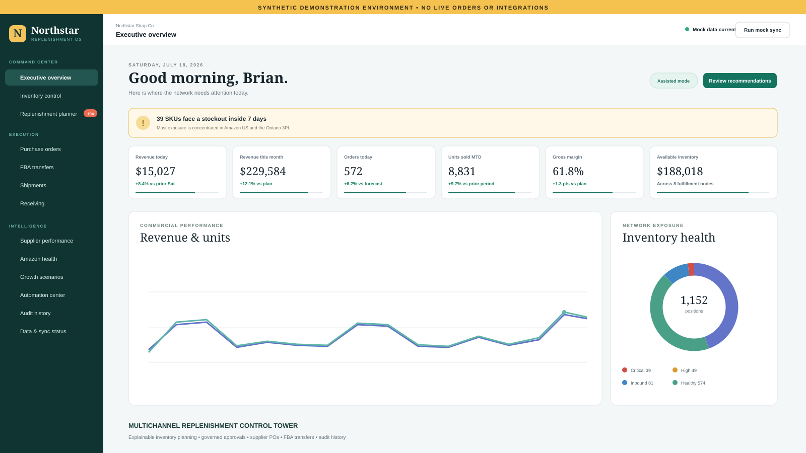

Supply chain planning & workflow control
Multichannel Replenishment Control Tower
A local HTML proof of concept for monitoring demand, inventory, supplier purchasing, regional replenishment, Amazon FBA transfers, inbound logistics, receiving exceptions, marketplace health, governed automation, and growth scenarios.
- Role
- Product designer, data modeler, and application developer
- Platform
- HTML, CSS, JavaScript, Python-generated synthetic data, and SQLite
- Portfolio data
- Fully synthetic company, SKU, supplier, inventory, order, shipment, and marketplace records

The challenge
Turn fragmented inventory signals into controlled replenishment decisions.
A multichannel operation can hold inventory across regional 3PL locations and marketplace fulfillment networks while supplier lead times, inbound shipments, reserved stock, demand velocity, and receiving exceptions are changing at the same time.
The operating problem is not simply showing inventory. The system needs to explain why an action is recommended, distinguish supplier purchasing from network transfers, preserve human approval, and leave a traceable record of every decision.
The solution
One operating view from demand signal through approved replenishment action.
I designed the control tower as an offline demonstration environment with deterministic synthetic data. The interface brings executive monitoring, inventory positions, replenishment logic, purchase orders, FBA transfers, shipments, receiving, supplier performance, marketplace issues, scenarios, automation controls, and audit history into one workflow.
- 144 synthetic products across four regional 3PLs and four Amazon FBA marketplaces
- 1,152 inventory positions with searchable position-level detail and risk classification
- Separate supplier purchase-order and 3PL-to-FBA transfer recommendations
- Explainable reorder point, safety stock, target inventory, MOQ, and case-pack logic
- Approve, modify, reject, defer, and bulk-approve decision workflows
- Shipment tracking, receiving discrepancy resolution, supplier performance, and marketplace issue handling
- Adjustable growth, channel-mix, lead-time, service-level, and planning-horizon scenarios
- Manual, assisted, and controlled-batch operating modes with dry-run safeguards and audit history
System design
Production-style boundaries without pretending the prototype is production.
The source dataset is generated from a fixed seed into a normalized SQLite database, then exported to browser-readable JavaScript and JSON snapshots. The UI reads through that data adapter so the browser demonstration remains self-contained and makes no network calls.
Workflow decisions persist only in local browser storage. The source SQLite data remains unchanged, allowing the operating dataset to be regenerated deterministically. That separation mirrors a future architecture where the local adapter can be replaced by a Flask service or authenticated API without redesigning the user workflow.
Decision logic
Recommendations remain inspectable before they become actions.
Inventory details expose on-hand, reserved, damaged, quarantined, confirmed inbound, current and projected days of supply, reorder point, target inventory, and net requirement. Recommended quantities are then adjusted to supplier MOQ and case-pack rules.
The recommendation drawer explains the calculation in plain language before an analyst approves or modifies it. Approved actions can then be grouped into a controlled review batch. Release is simulated and audited, but no supplier, Amazon, freight, email, or marketplace transaction is sent externally.
Synthetic operating scale
Large enough to expose real workflow and prioritization problems.
The demonstration dataset is calibrated to an established specialty-accessories business with approximately 238,000 annual synthetic units, about $6.2 million in synthetic revenue, and a channel mix weighted toward marketplace fulfillment.
Those values are planning assumptions rather than company claims. The purpose is to make the interface behave like an operating system with enough volume, exceptions, and competing priorities to demonstrate realistic decision support.
Portfolio note